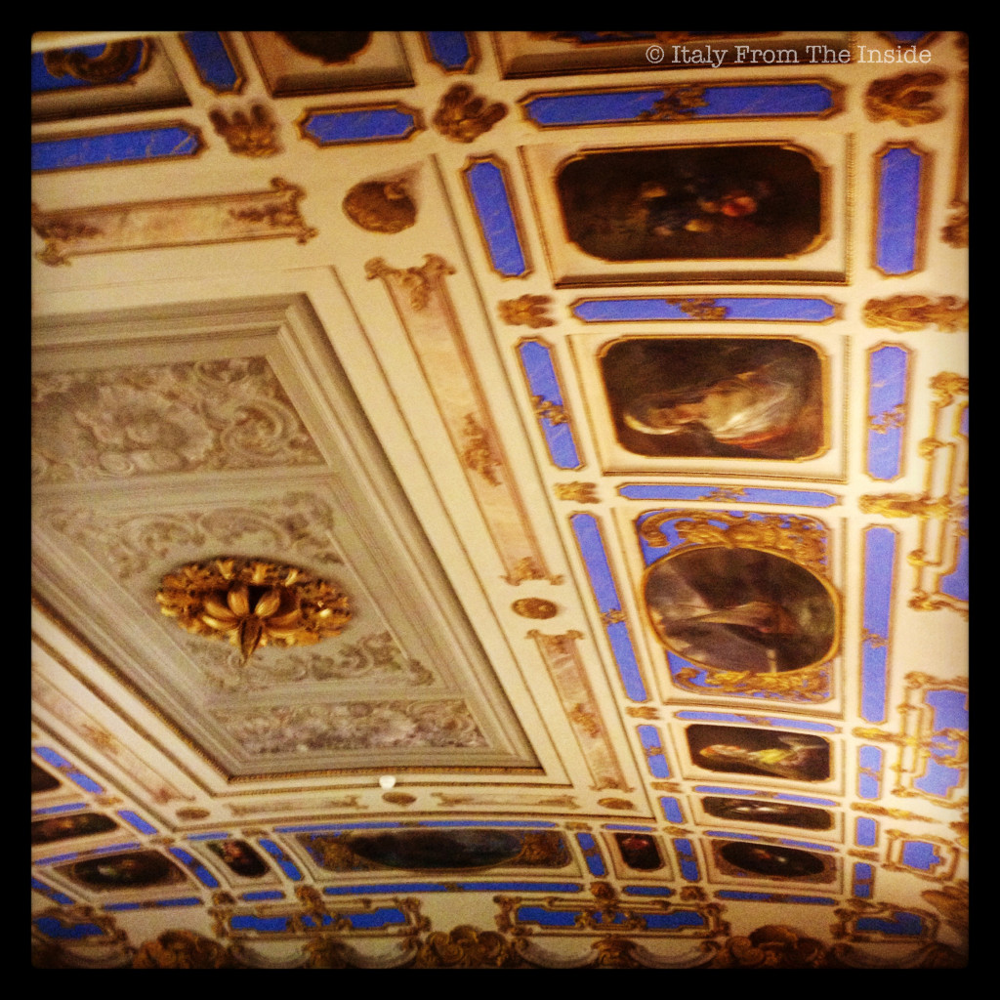
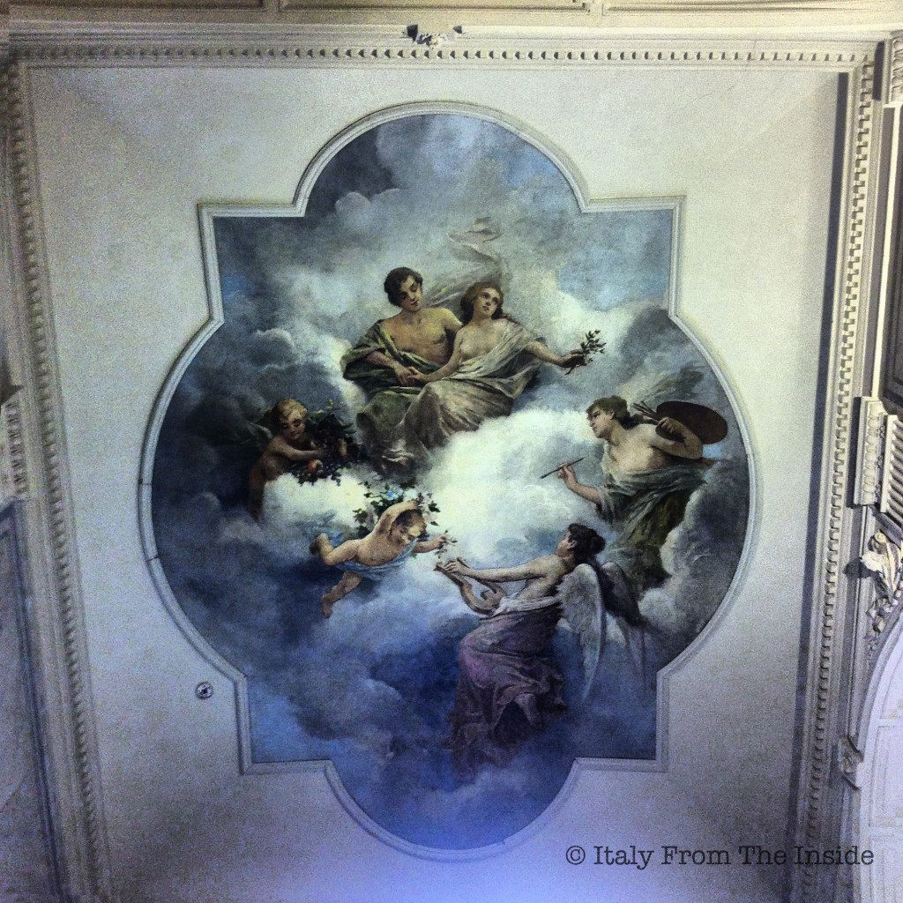

The moment I sat down, I looked up. And I stayed like that for a few minutes, admiring this gorgeous frescoed ceiling and wondering if the original blue paint was really this bright. Maybe it was.
Built in the middle of the 19th century in the Neoclassic style and enriched by stuccoes and frescoes, the Brambilla-Morpurgo mansion used to be a private residence. Today it hosts the State Library of Trieste. Studying surrounded by this artwork cannot be more pleasant.